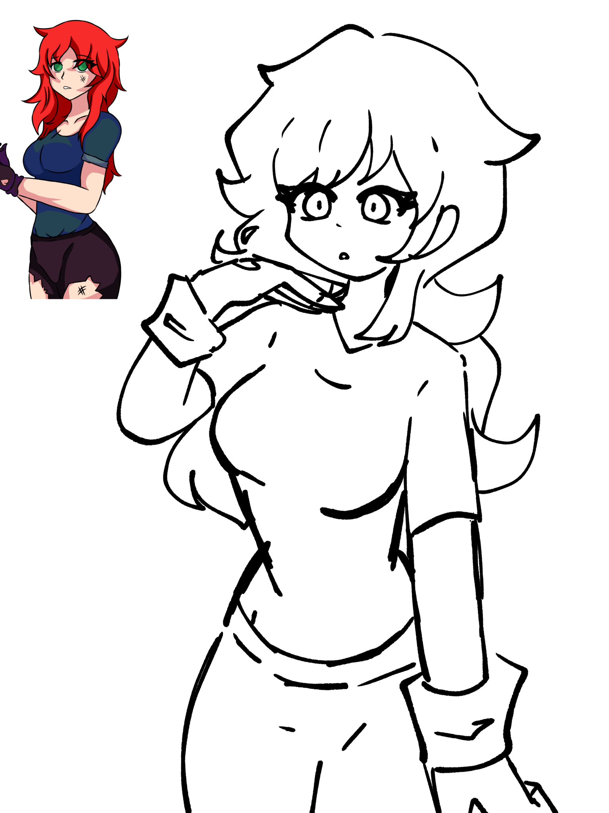
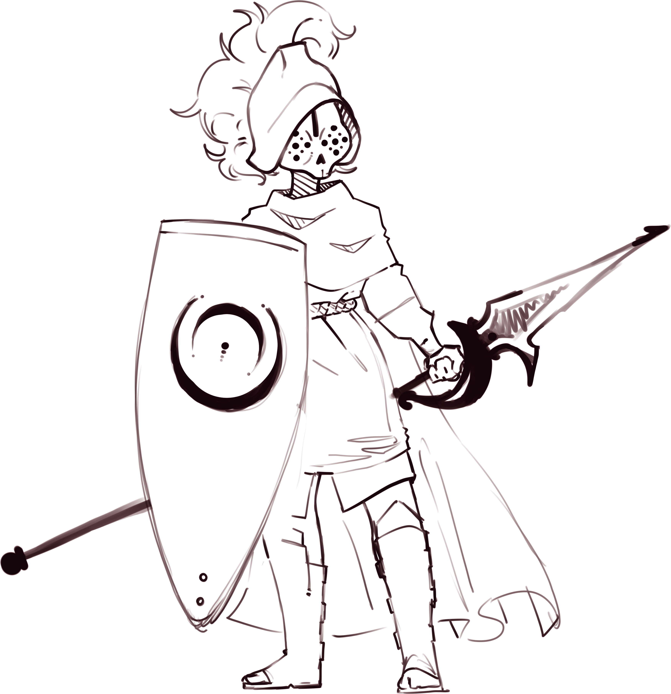
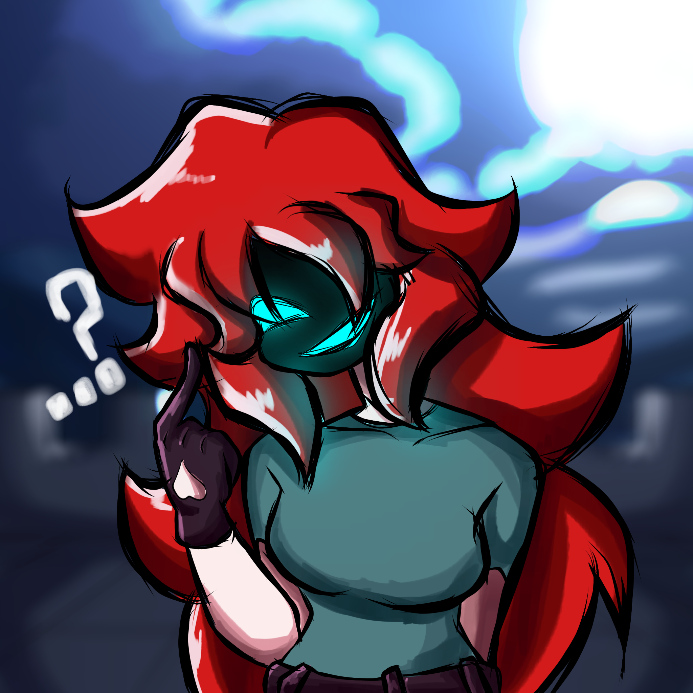
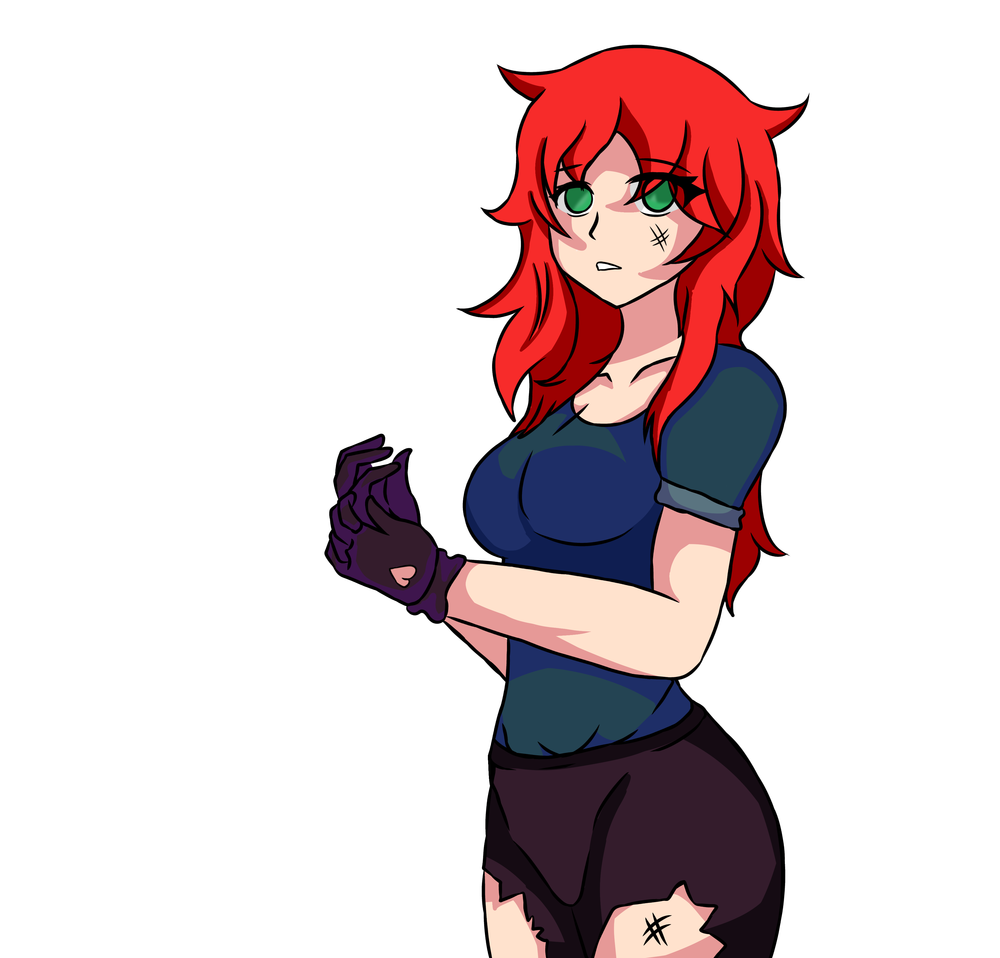
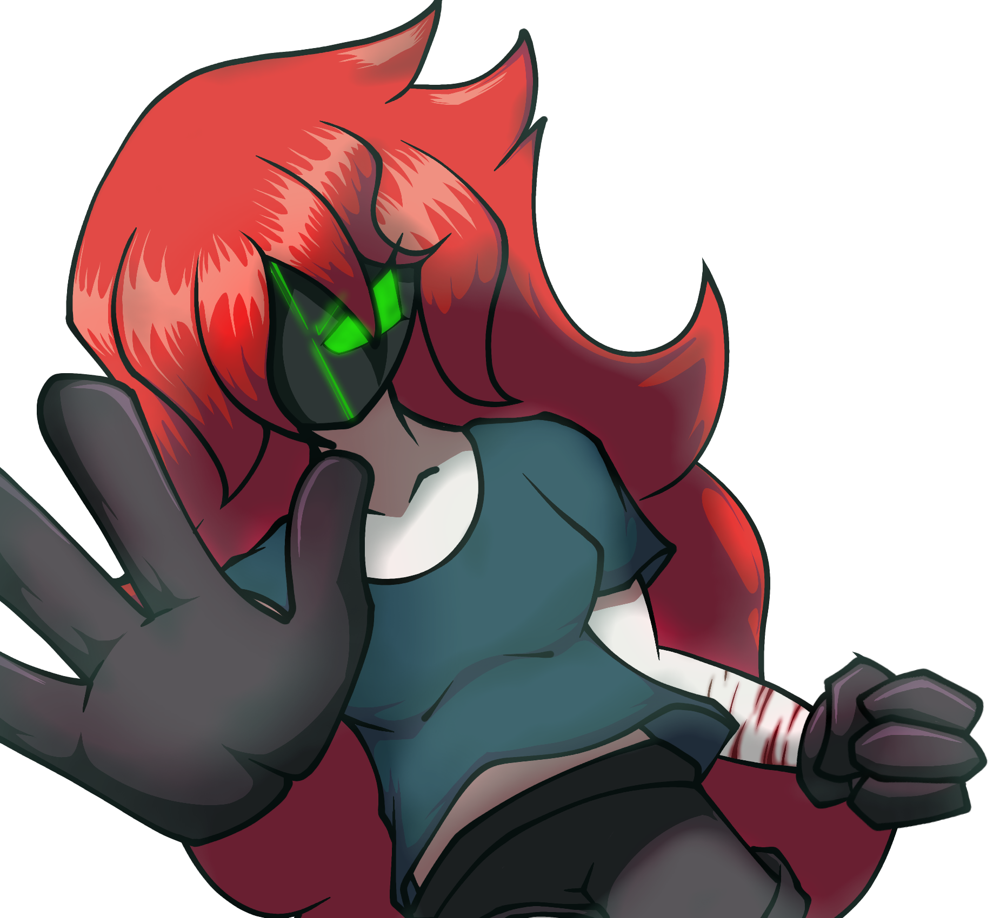
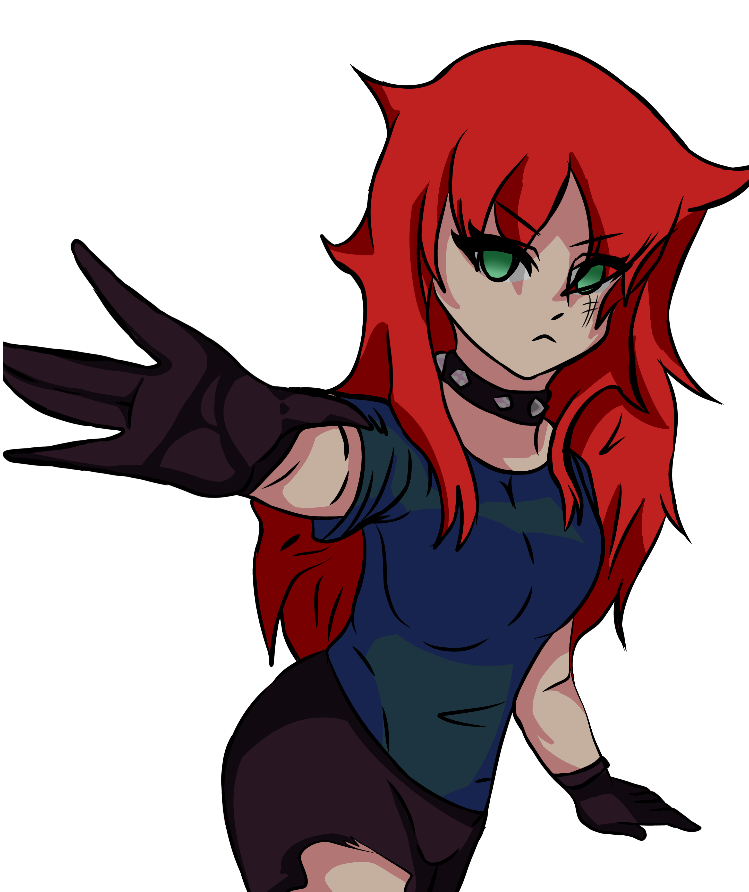

SCRAPPED
Archivo interactivo de Camila con tres canciones descartadas, videos manipulables, diseños antiguos, sprites, pruebas de shaders y fragmentos instrumentales.
The Depths
Motivo del descarte: no existía un seguimiento claro para la historia. El equipo todavía no sabía cómo adaptar a Camila para representar su eliminación por la Matrix de NRX y los fallos de realidad.
City Goddess
Motivo del descarte: la canción no consiguió una idea clara de lore ni una función narrativa estable dentro de la temporada de Camila.
Motivo del descarte: originalmente no estaba planeada una tercera canción para Camila. Durante la reproducción, desde 0:58 el título entra en un efecto de ola y comienza la lluvia; desde 1:25 el texto se reorganiza en bucle. En 4:47 todo regresa a la normalidad.
Instrumentales cortos
Camila Short Instrumental 01
Camila Short Instrumental 02
Galería descartada





